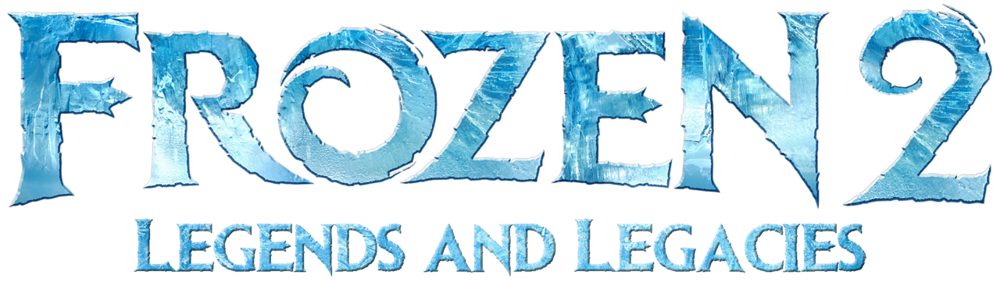
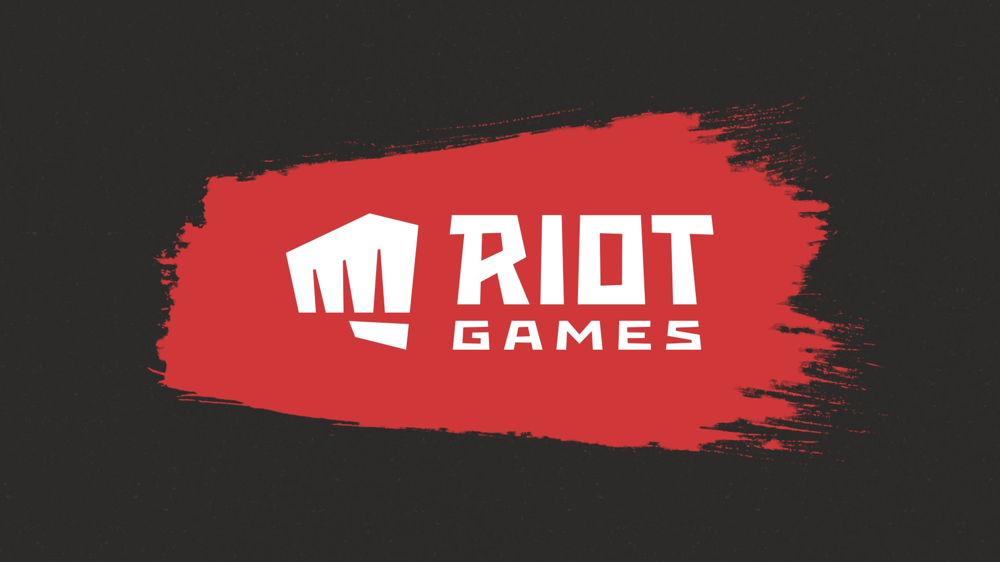

조재원
CHO JAEWON
趙 在 元
- jawon0407@naver.com
- H.P
- 010-8960-6334
- Address
- 서울 강북구 월계로 21가길 41
- 희망연봉 : 면접시 협의
- 지원 부문 : 퍼블리셔, 프론트엔드
교육사항
- 2022. 06 ~ 2022. 12
- 프로젝트기반 프론트엔드 웹&앱 SW 개발자 양성과정 그린컴퓨터아카데미 / 수료
- 2022. 03 ~ 2022. 03
-
TypeScript로 블록체인 만들기
 Nomard Corder / 수료
Nomard Corder / 수료
- 2022. 02 ~ 2022. 03
-
Momentum 클론 코딩 / 그림판 만들기 / WeTube 클론 코딩
Nomard Corder / 수료
- 2021. 12 ~ 2022. 01
-
코코아톡 클론 코딩 강의 / Grid 레이아웃 마스터하기
Nomard Corder / 수료
포트폴리오
-
YONEX 기업형 PC
http://jawon0407.cafe24.com
링크
YONEX 홈페이지 PC버전을 디자인 작업부터 웹표준과 접근성을 준수한 HTML5, CSS3 및 JavaScript, JSON, AJAX, PHP 등을 사용하여 구현한 기업형 웹사이트
-
YONEX Mobile 기업형 Mobile
http://jawon0407.cafe24.com/mobile
링크
다양한 모바일 디바이스 종류의 해상도에 맞추어 HTML5, CSS3 및 Javascript, JSON, AJAX, PHP을 이용한 모바일 웹사이트 제작
- 
-
Frozen 2 해상도별 반응형
http://jawon0407.cafe24.com/media
링크
Media Query와 jQuery 등을 이용하여 각각의 모바일 기기 해상도에 최적화된 UI로 제작된 반응형 웹사이트.
- 
-
Riot Games BootStrap 반응형
http://jawon0407.cafe24.com/bootstrap
링크
FrameWork인 BootStrap을 이용한 해상도별 UI를 제공하는 반응형 웹사이트
-
H · H Tailwind 반응형
http://jawon0407.cafe24.com/tailwind
링크
FrameWork인 Tailwind을 이용한 해상도별 UI를 제공하는 반응형 웹사이트
-

-
Nexon WordPress 반응형
http://jawon0407.cafe24.com/wordpress
링크
가장 널리 사용되는 오픈소스 CMS중 WordPress를 사용하여 구현한 NEXON 반응형 홈페이지
학력사항
- 2015. 03 ~ 2018. 02
- 용문고등학교(서울) 이과 / 졸업
직무능력사항
- HTML5 / CSS3 Sass, Less
- 직접 디자인한 시안 또는 디자인 되어있는 웹사이트 시안으로 웹표준과 웹접근성을 준수한 시맨틱 마크업으로 웹사이트를 구현할 수 있고, 요소마다의 스타일을 파악하여 유지 및 보수 가능
- JavaScript/jQuery
- jQuery와 같은 라이브러리를 활용하여 사이트를 구현하는데 필요한 다양한 동적 기능과 이벤트의 구현 가능
- JSON, AJAX
- JSON/XML 파일 포맷과 AJAX를 이용한 비동기 방식의 페이지 구현
- PHP, MySQL
- MySQL 데이터베이스 구축 및 SQL 명령어의 사용이 가능하며 PHP와 JavaScript를 이용한 개발 페이지 제작 가능 (회원가입, 로그인/로그아웃, 아이디/비밀번호 찾기, 게시판, 검색기능 등 구현)
- BootStrap, Tailwind CSS
- JavaScript 반응형 프레임워크 중 하나인 BootStrap 와 Tailwind CSS 를 사용하여 해상도에 따른 최적화된 반응형 웹사이트의 구축 가능
- Webpack
- 웹팩은 자바스크립트 애플리케이션을 위한 정적 모듈 번들러로서, 웹 애플리케이션을 위한 모든 자산(HTML, CSS, JavaScript, Images, Fonts 등)을 자바스크립트 모듈로 처리하여 하나의 번들로 생성 및 최적화를 위한 기본적인 설정을 할 수 있음
- React
- React는 사용자 인터페이스를 만들기 위한 컴포넌트 기반의 JavaScript 라이브러리로서, class 컴포넌트와 함수형 컴포넌트를 사용하여 간단한 기능들을 구현할 수 있음 아직 공부한 기간이 짧아 실무에서 사용할 수 있는 수준은 아니지만 더욱 더 공부하여 실무에서 사용할 수 있는 수준으로 발전하고 싶음
- WordPress
- 다양한 테마와 플러그/위젯을 제공하는 오픈소스 CMS 중 가장 많이 쓰이는 WordPress를 이용하여 홈페이지의 구축 및 관리 가능
- Adobe Photoshop
- 웹페이지 디자인 작업과 대부분의 기능적인 부분에 대한 작업 가능
- Adobe Premier Pro
- 간단한 동영상의 편집 작업 가능
- MS Office, Notion 워드/엑셀/ppt
- 업무상 회의나 업무적인 소통을 바로 기록할 수 있으며 기본적인 범위에서의 사용 가능
- Git & Github
-
원격저장소 Github 사용하여 스스로의 작업을 저장 및 다른 사람들과 협업 가능
https://github.com/jawon0407 링크
자격 및 면허 취득
- 운전면허 2종 보통
- 취득일 2020년 09월 02일 / 서울지방경찰청
자기 소개서
- 지원 동기
-
[시작은 우연, 끝은 필연]
방과 후 활동으로 컴퓨터 프로그래밍을 처음 접했습니다. 다양한 에러들을 마주치며 힘들기보다는 문제를 해결해 나가는 과정에서 보람을 느꼈었습니다. 군 전역 이후, 본격적으로 진로고민을 하면서 흥미를 느꼈었던 프로그래밍을 생각하게 되었고, 광범위한 개발 분야에서도 어떤 부분을 개발할 수 있을지 생각한 끝에 웹 퍼블리셔의 길을 선택했습니다. 마음을 정한 뒤, 웹 퍼블리셔로 성장하기 위해 다양한 강의를 듣고 역량을 쌓고자 노력했습니다. 낯선 분야에 도전하는 과정은 쉽지 않았습니다. 하지만 힘듦 속에서 성장하는 스스로를 보면서 보람되었고 하나하나 프로젝트를 완성할수록 자신감을 가질 수 있었습니다. 저는 노력하는 사람입니다. 안주하기 보다는 보다 성장하기 위해 노력해왔고 회사 안에서도 저의 성장하고자 노력하는 점은 긍정적인 영향을 줄 것입니다. 혼자보다는 함께 성장해 나가는 팀원이 되겠습니다.
- 성장 과정
-
[적극적으로 주도하고 협력할 줄 압니다.]
자립심과 협동을 기본으로 주위 사람들에게 긍정적인 영향을 줄 수 있는 모습으로 발전해왔습니다. 어렸을 적 아버지가 크게 다치시면서 부모님과 떨어져 지낸 경험이 있습니다. 어린 마음에 갑작스러운 상황이 무섭고 힘들었지만 가족의 소중함과 자립심을 기르는 계기가 되었습니다. 형과 누나와 함께 서로 기죽지 않게 힘내고 힘든 일이 있으면 대화를 통해 서로 도우며 ‘함께’라는 소중함을 깨닫게 되었습니다. 또한, 부모님에게 의지해왔던 부분을 스스로 해결하고자 하면서 자립심을 기를 수 있었습니다. 누군가가 해주기를 기다리기 보다는 주도적으로 나서는 편입니다. 그리고 ‘함께’의 의미를 누구보다 잘 알고 있는 점은 회사에서 프로젝트를 진행하면서, 팀원으로써, 긍정적인 영향을 미칠 것이라 생각합니다.
- 교육 활동
-
[기초는 탄탄하게, 응용은 능숙하게]
끈기와 성실함으로 주어진 일에 최선을 다하고 기초를 탄탄하게 다지면서 나아갔습니다 프로젝트를 진행하는 데에 있어서 가장 큰 덕목은 끈기와 성실함이라고 생각했습니다. 기술적인 부분도 중요하지만 끈기 있게 주어진 일을 맡아 성실하게 진행하는 것이야 말로 성장하는데 가장 큰 원동력이라 생각했습니다. 그래서 처음부터 욕심 부리지 말고 탄탄한 기초를 쌓고자 노력했습니다. 노마드코더의 카카오톡 클론 코딩, 모멘툼 앱 따라 만들기 등 클론 코딩을 통해 웹에서 사용하는 HTML5, CSS3, JS의 기초를 다졌고, 생활코딩, 조코딩, 드림코딩 등 코드를 알려주는 유튜브 채널을 통해서 세세한 개념을 다졌습니다. 현재는 프로젝트기반 웹/앱 SW개발자 양성 교육과정에서 프로젝트를 진행하면서 트렌드에 맞는 웹/앱을 만들어 나가고 있습니다. 개인 프로젝트 작업을 하며 무한 루프 슬라이드, 갤러리 스크롤 애니메이션 등 다양한 기능과 효과들을 순수 CSS, 바닐라JS 로도 구현해보기 위해서 여러 글들을 보면서 학습하고 구현해보고 그 뒤에 SWIPER, SLICK, AOS JS 등 다양한 라이브러리나 프레임워크를 찾아보면서 해당 공식 문서를 읽고 적용하는 과정에서 기초의 중요함을 느꼈고 기초를 응용하여 많은 코드로 구현해야 할 것들을 프레임워크를 이용하여 단 몇 줄의 코드로 만으로 구현이 가능하다는 걸 알고 프레임워크의 효율성에 대해 깨닫게 되었습니다.
- 성격의 장점 및 단점
-
[팀 내 맡은 바 끈기 있게 책임을 다하고 원활한 소통을 하며 협동할 수 있는 사람]
저의 강점은 끈기, 성실함, 소통, 협력, 책임감이라 생각합니다. 끈기와 성실함은 어릴 때부터 부모님의 권유로 시작하게 된 스포츠가 큰 계기였습니다. 비단 스포츠가 아니라 모든 활동에서 똑같을 수도 있지만 스포츠라는 세계에서 살아남기 위해서 자기 단련이 바탕이 되어야 합니다. 스포츠 활동에 흥미를 가지고 즐겨하다 보니 점점 더 높은 곳을 바라보게 되었고 자기 자신의 실력을 끌어 올릴 필요가 있어졌습니다. 실력을 끌어올리는데 있어서 가장 중요한 것은 하루도 빠짐없이 게으르지 않게 해당 운동을 매일같이 해야 되는 것이었습니다. 그러면서 어떤 일을 하던 꾸준함과 성실함이 저에게 빠질 수 없는 초석으로 자리매김이 되었습니다. 이후, 병역의 의무를 이행하기 위해 최전방으로 군대를 가게 되었습니다. 다양한 사람들과 함께 지내야 하는 부대 안에서 어떻게 지내야 할지 고민을 하게 되었고, ‘대화’와 ‘협동’이라는 결론을 내릴 수 있었습니다. 대화를 통해서 공통적인 취미를 찾게 되고, 함께 협력하고 작업하며 부대원들과 보다 좋은 인연을 만들 수 있었습니다. 군 생활에서 소통하고 협력했던 경험은 이후 저에게 장점이 되었습니다. 마지막으로, 강한 책임감을 가지고 있습니다. 오랜 기간 스포츠 활동을 하고 군생활을 하며 ‘나’보다는 ‘함께’를 자연스럽게 중요시 여기며 제가 맡은 역할을 끝까지 완수하며 길러온 책임감은 프로젝트를 진행함에 있어 큰 장점이 될 수 있을 것입니다.
- 입사 후 포부
-
[안주해 있지 않고 발전해 더 많은 도움이 되는 사람이 되겠습니다.]
모든 사용자들이 쉽게 접근하고 사용할 수 있는 웹을 만들고 싶습니다. 목적에 맞는 적절한 코드를 작성하기 위해 배우고 배운 것을 활용하는 것에 게을리하지 않겠습니다. 빠르게 변화하는 개발 환경과 새롭게 나오는 문법, 기존에서 더 추가되는 것들을 습득해 기존의 코드보다 효과적이고 더 적은 코드를 작성할 수 있도록 다양한 프레임워크와 라이브러리를 활용하는 법에 대해 공부하겠습니다. 궁극적으로 웹에서만 그치지 않고 다양한 프로젝트를 진행할 수 있는 웹 퍼블리셔에서 프론트 엔드 개발까지도 할 수 있도록 성장해 사용자들에게 긍정적인 이미지를 심어 줄 수 있는 기여를 하고 싶습니다.